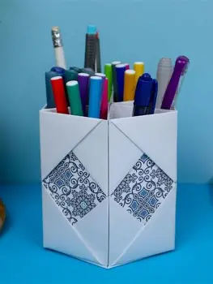

Purpose of This Site
Welcome to Heart n Craft DIY This site focuses on creating friendly,unique craft projects that you and your family can enjoy together. Crafting can also help relieve stress from school, work or everyday life.
What you find here?
You'll find simple beginner projects such aspen holders, paper organizer, and storage units for note books and supplies.These projects are easy to follow and come with clear step-by step guidance.
Sample Beginner Projects
